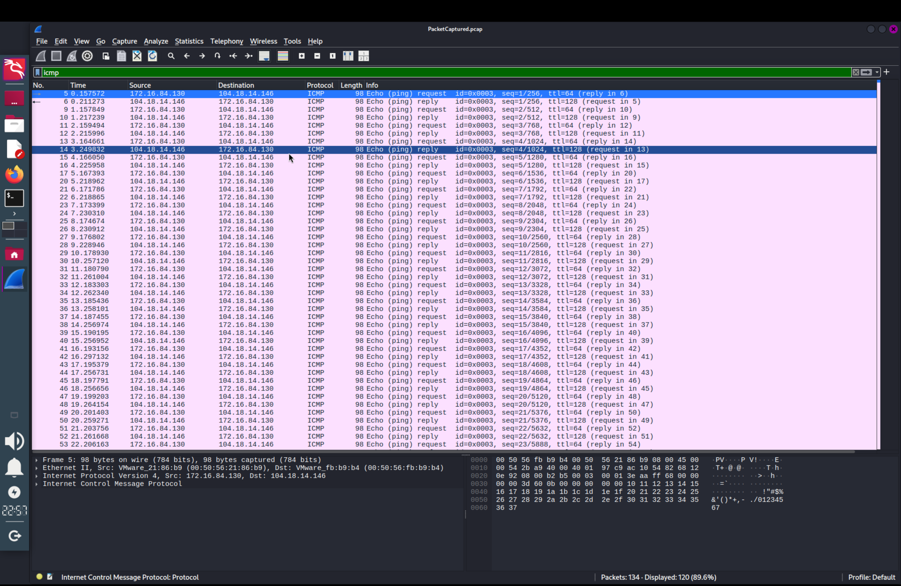
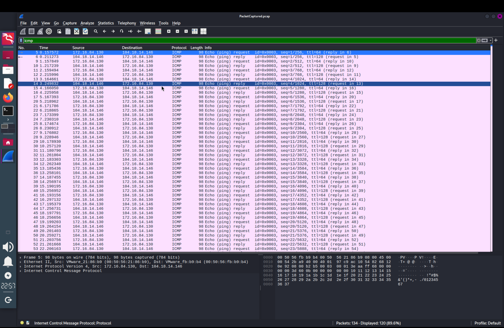

Step 1: Launch Wireshark
Start the Wireshark application on your system.
Wireshark main interface on launch
Step 2: Select Network Interface
Choose the active network interface (e.g. Wi-Fi) to start capturing packets on.
Screen after selecting the active Wi-Fi interface
Step 3: Start Continuous Ping to Generate Traffic
Open terminal and run the command to ping google.com continuously for 60 seconds to generate traffic:
Continuous ping producing ICMP traffic
Step 4: Capture and Stop
Stop the Wireshark capture after the 60-second ping session is completed.
Stopping the packet capture after ping duration
Step 5: Save Captured Packets
Export and save the captured packets as a .pcap file for analysis and documentation.
Opening captured network packets file
Step 6: Analyze Available Protocols
Use Wireshark’s protocol hierarchy and filter features to view available protocols in the capture file.
 

Protocols identified in the capture file
Summary
The task provided hands-on experience with network capture and analysis using Wireshark. Generating packet traffic with ping ensured sufficient data for protocol identification. Filtering and examining the capture revealed a variety of common network protocols and packet details. Understanding these protocols aids in troubleshooting and network diagnostics.